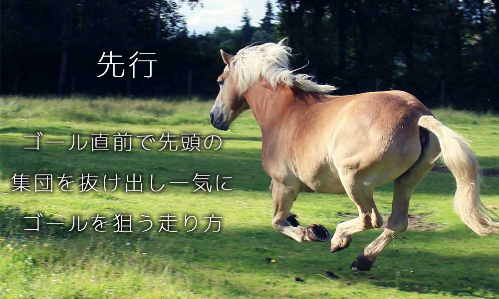

馬の脚質とは
馬の脚質とは

脚質に関わる用語（五十音）
【あ行】
脚色（あしいろ）
レースで走っていると時の馬の走りっぷりのこと。
一杯（いっぱい）
力を出し切った事で体力の限界により失速すること。
馬なり（うまなり）
騎乗者が無理に調教せず、馬の行くままに走らせること。
【か行】
駈足《駆足・キャンター》（かけあし）
左右不対称の動きで3ビートの動きとなる。また、無理に遅くすると4ビート正しくない動きとなる。
脚質（きゃくしつ）
逃げ、先行、差し、追い込みなど、その馬が得意とする走り方。
【さ行】
差し脚（さしあし）
最後の直線走路やレースの後半で速歩で前方の馬に向かい後方の馬が差し返し、交わすこと。
差し馬（さしうま）
中団以上から先行する馬たちに交わすレースをする馬を差す。
斜体歩（しゃたいほ）
「左前と右後」「右前と左後」対角線に結ばれた２本の肢がそれぞれ１組ずつ地面に着いたり離れたりして歩くこと。
襲歩《ギャロップ》（しゅうほ）
駈脚からさらに素行速度を速めること。競馬など疾走しているときにみられる歩法で速度は最も速い。
末脚（すえあし）
ゴール近くになって脚力で加速すること。
ステイヤー
スタミナが豊富で、長距離レースを得意とする馬のこと。
スプリンター
スピードを身上とし、短距離レースを得意とする馬のこと。
側対歩（そくたいほ）
左右同じ側の前後の肢が、１組ずつ地面に着いたり、離れたりする歩法。
【た行】
手前（てまえ）
馬が走る時に、先に地面に着く肢のこと。右前肢が先に着けば「右手前」左前肢が先に着けば「左手前」という。
【な行】
常歩（なみあし）
歩法の中で最も速度が遅い歩き方。
【は行】
ハッキング
軽めの駈足のこと。
速歩《タグ・トロット》（はやあし）
左右の前足と後ろ脚が交互に対になりながら（分速約220メートル）進んでいく「斜対歩」のこと。
歩法（ほよう）
馬の歩行運動。「常歩」「速歩」「駈歩」「襲歩」の４パターンがある。
【ま行】
マイラー
1600メートル前後の距離の競走を得意とする馬のこと。
ミドルディスタンスホール
2000メートル前後の距離の競走を得意とする馬のこと。